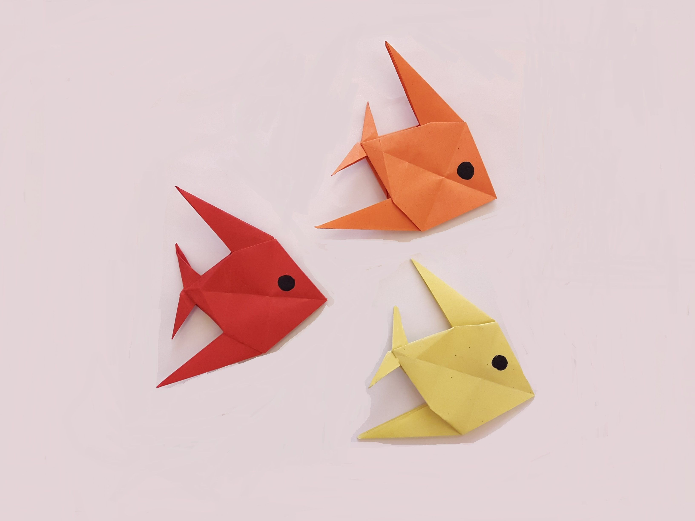

How to make origami flowers
How to make an origami dragon

How to make origami birds
How to make origami fish
Interesting facts on origami:
1.Origami is derived from two Japanese words: Ori (folded) and Kami (paper). Before that, the art was called “orikata” (folded shapes)
2.Akira Yoshizawa is considered the Grand Master of modern Origami. He created over 50,000 origami models
3.An ancient Japanese legend says if you fold one thousand cranes you will be granted a wish.
4.The fastest time to make 100 origami cranes is 40 minutes 35 seconds, achieved by Yoneyama Yuichi (Japan) in Nagoya, Japan, on 30 November 2010. That’s an average of 24.35 seconds for each crane!
5.Initially, the art of paper folding was restricted only to ceremonial occasions because paper was scarce and expensive.
6.No scissors allowed! Traditional origami uses a piece of paper in the shape of a square.
7.There are more than a dozen National Origami Associations throughout the world.
8.Origami was first only practiced by the Elite
9.The first book about Origami was written in 1797
10.The Samurai in Japan gave each other gifts known as "noshi" that were paper folded with a strip of fish and were considered a good luck token